Maternal & Infant Risk AI DMT 2026
Maternal & Infant Mortality Risk Screening
An explainable clinical screening platform built on Data Mining Techniques, balanced SMOTE training, and multi-model benchmarking. Engineered to assist frontline healthcare workers in early identification of critical obstetric complications before onset.
Instant Patient Case Presets
Load real-world clinical archetypes to test model predictions immediately:
Heuristic safety matrix evaluated against WHO and ICMR maternal care protocols:
Multiaxial biometric profile plotted against the optimal clinical reference envelope:
Real-time biomarker levels evaluated relative to standard physiological danger limits:
Population Insights from 5,000 Calibrated Obstetric Records
Explore statistical distributions and correlations that guided our feature engineering, SMOTE balancing strategy, and machine learning pipeline. Click any visual card to expand.
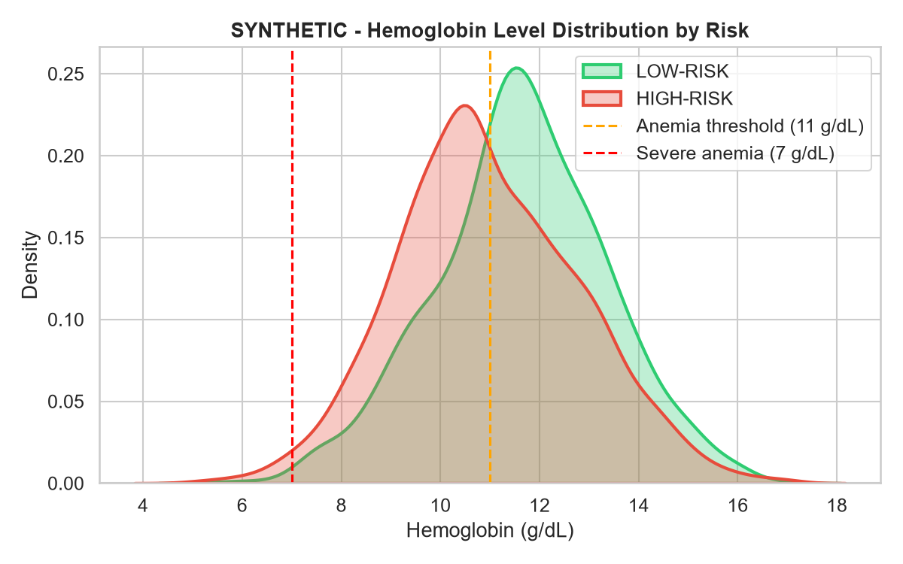
Hemoglobin Distribution by Risk Status
Sharp risk escalation when maternal hemoglobin drops below the 11.0 g/dL threshold (anemia).
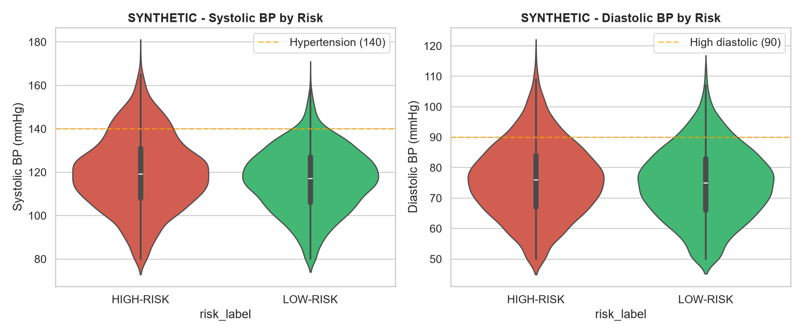
Systolic vs Diastolic BP Correlation
Gestational hypertension clustering in high-risk pregnancies (SBP ≥ 140 or DBP ≥ 90).
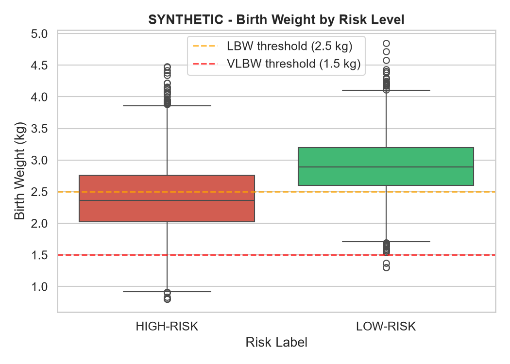
Neonatal Birth Weight Distribution
Severe correlation between infant low birth weight (< 2.5 kg) and adverse mortality prognosis.
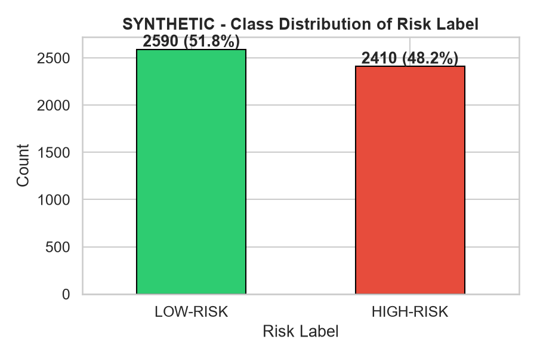
Class Distribution & SMOTE Balancing
Original dataset class imbalance highlighting the necessity of SMOTE oversampling.
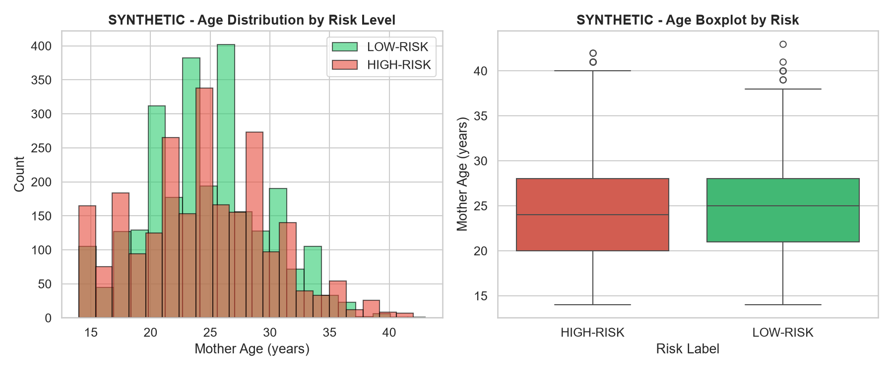
Maternal Age vs Risk (U-Shaped Curve)
Classic U-shaped obstetric risk curve: elevated mortality in teenage (< 18) and advanced (> 35) mothers.
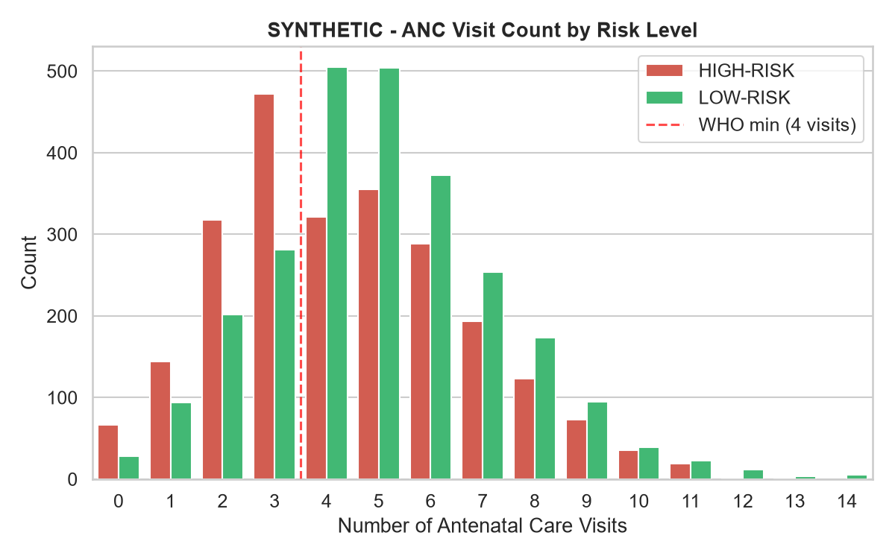
Antenatal Care (ANC) Protective Effect
Mothers completing ≥ 4 ANC checkups experience drastically lower risk of adverse outcomes.
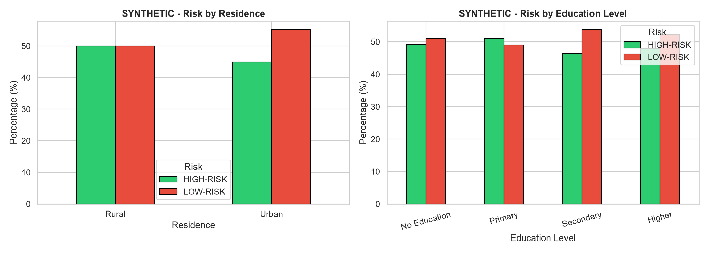
Urban/Rural & Education Stratification
Socioeconomic gradients: secondary/higher education and urban access correlate with safer delivery.
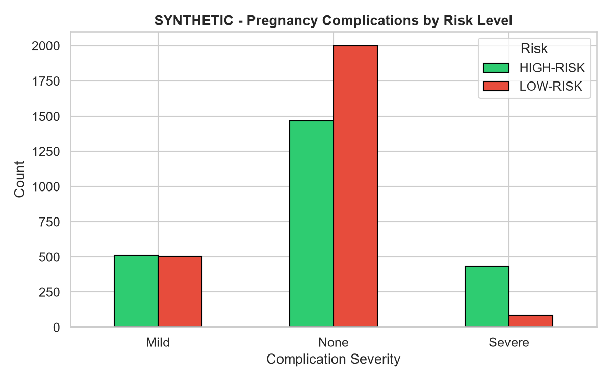
Pregnancy Complication Severity
Direct impact of pre-existing complications (pre-eclampsia, gestational diabetes) on adverse risk.
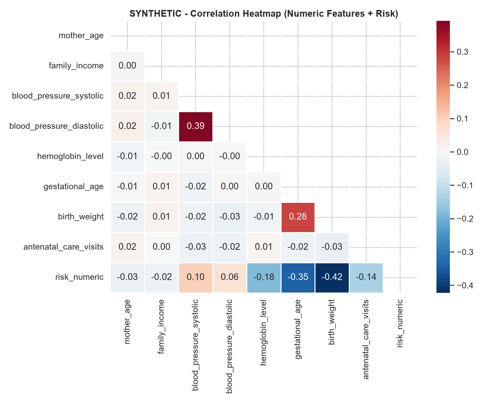
Multivariable Correlation Heatmap
Pairwise Pearson correlations across all 12 clinical and socioeconomic predictors.
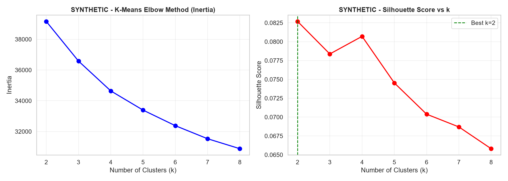
K-Means Clustering (Elbow & Silhouette)
Unsupervised segmentation discovering natural risk clusters across the patient cohort.
Ranked primarily by Recall on High-Risk class. In maternal healthcare screening, failing to detect a high-risk mother (False Negative) carries mortal risk, making Recall the paramount clinical objective.
| Rank | Algorithm | Recall (Safety) | ROC-AUC | F1-Score | Precision | Accuracy |
|---|---|---|---|---|---|---|
| 🥇 | XGBoost Classifier | 83.2% | 0.929 | 0.834 | 0.835 | 84.0% |
| 🥈 | Random Forest | 83.0% | 0.917 | 0.824 | 0.818 | 82.9% |
| 🥉 | Decision Tree | 82.0% | 0.831 | 0.768 | 0.722 | 76.1% |
| 4️⃣ | SVM (RBF Kernel) | 78.0% | 0.882 | 0.789 | 0.798 | 79.9% |
| 5️⃣ | Logistic Regression | 77.2% | 0.866 | 0.773 | 0.773 | 78.1% |
| 6️⃣ | K-Nearest Neighbors | 65.1% | 0.789 | 0.686 | 0.725 | 71.3% |
| 7️⃣ | Gaussian Naïve Bayes | 56.2% | 0.848 | 0.672 | 0.836 | 73.6% |
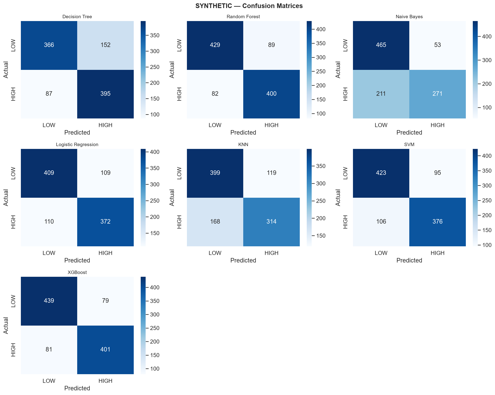
💡 Clinical Reading: Lower values in the bottom-left quadrant (False Negatives) represent safer clinical models.
Bulk Obstetric Patient Scoring Engine
Upload a hospital admission CSV with the 12 required clinical and socioeconomic fields to execute rapid batch inference.
Drag & Drop Cohort CSV File Here
or click anywhere in this box to browse files from your computer
End-to-End Clinical Mining Pipeline
| Biomarker / Indicator | Normal Target | Borderline Alert | Critical High-Risk Limit | Clinical Rationale |
|---|---|---|---|---|
| Systolic Blood Pressure | < 120 mmHg | 120 – 139 mmHg | ≥ 140 mmHg | Gestational hypertension, pre-eclampsia danger |
| Diastolic Blood Pressure | < 80 mmHg | 80 – 89 mmHg | ≥ 90 mmHg | End-organ hypoperfusion and placental insufficiency |
| Hemoglobin Level | ≥ 11.0 g/dL | 7.0 – 10.9 g/dL | < 7.0 g/dL | Severe anemia causing intrapartum cardiac collapse |
| Gestational Age | 37 – 42 weeks | 34 – 36 weeks | < 34 weeks | Respiratory distress syndrome, neonatal vulnerability |
| Infant Birth Weight | ≥ 2.50 kg | 2.00 – 2.49 kg | < 2.00 kg | Severe intrauterine growth restriction (IUGR) |
| Antenatal Care Visits | ≥ 4 visits | 2 – 3 visits | 0 – 1 visit | WHO standard for timely screening and prophylaxis |
Sakthi Darshan K
Suriyaa R
Coursework: Data Mining Techniques (DMT) · Supervised & Unsupervised Learning Systems
Plot Title
Plot description